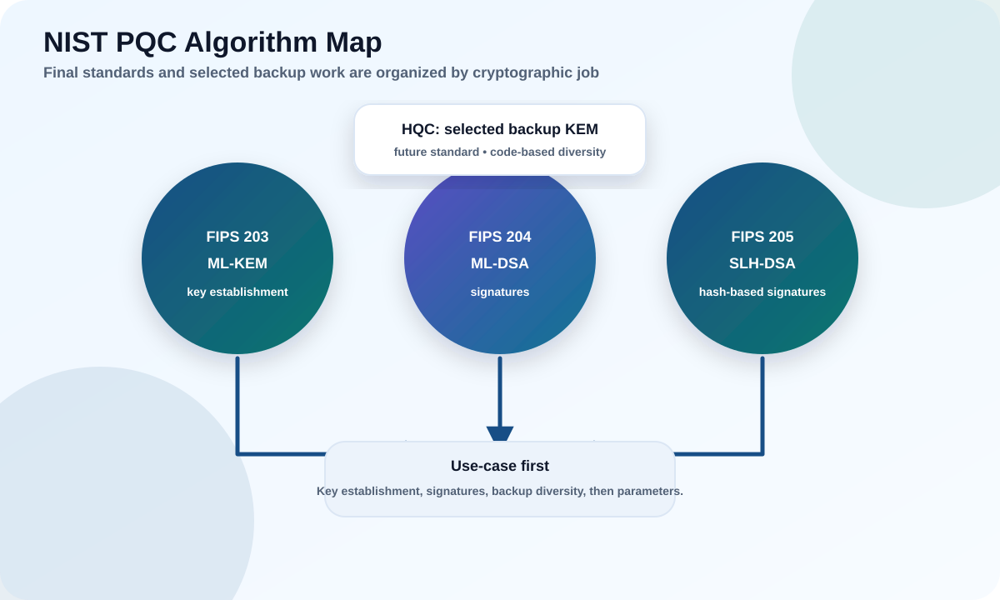

Meet the actual algorithms NIST standardized, learn which cryptographic job each one does, and see — in bytes — why "just swap the algorithm" is never that simple.
Map each algorithm family to the job it does (key exchange vs signatures).
Explain why ML-KEM is not a general "encrypt this file" API.
Understand algorithm diversity, backups, and agility.

Try it: why size is the first thing that bites you
Post-quantum keys and signatures are much bigger than what we use today. That single fact drives handshake sizes, storage schemas, and firmware slots. Compare them.
Numbers are representative
Sizes come from the NIST FIPS 203/204/205 parameter sets and the Falcon submission; treat them as approximate reference values, not exact wire sizes (encodings add a little). The ratio is the point: PQC signatures are ~10–100× larger than ECDSA.
1
The standards baseline
In 2024 NIST finalized the first three PQC standards. Organize everything by job.
Standard
Algorithm
Job
Based on
FIPS 203
ML-KEM
Key establishment (KEM)
CRYSTALS-Kyber (module lattices)
FIPS 204
ML-DSA
Digital signatures (general purpose)
CRYSTALS-Dilithium (module lattices)
FIPS 205
SLH-DSA
Digital signatures (conservative)
SPHINCS+ (hash-based)
Selected 2025
HQC
Backup KEM (different math)
Code-based
Draft (FN-DSA)
Falcon
Compact signatures
NTRU lattices
These did not appear overnight. NIST ran an open, global competition: a public call in 2016, dozens of submissions from teams worldwide, several rounds of public cryptanalysis where researchers openly tried to break each other's designs, draft selections in 2022, and the finalized FIPS 203/204/205 in August 2024. That decade of adversarial peer review is exactly why you should trust these standards over any proprietary alternative — and why "roll your own PQC" is an even worse idea than rolling your own classical crypto.
A standards-aligned plan starts by naming the job (key exchange? signature?), then picks the family, then the parameter set. HQC was selected in 2025 as a backup KEM built on different (code-based) math, so a future weakness in lattices would not take down everything. FN-DSA (Falcon) is still being finalized; track its status before committing.
Common pitfall
Saying "we use PQC" with no specifics. Always state algorithm, parameter set, job, protocol, and implementation — otherwise the claim is unverifiable.
Why two names for the same thing?
You will see "Kyber" and "ML-KEM," or "Dilithium" and "ML-DSA," used almost interchangeably — and it trips up newcomers constantly. The romantic names (Kyber, Dilithium, SPHINCS+, Falcon) are what the research teams called their submissions. Once NIST standardized them it gave them formal, boring names: ML-KEM, ML-DSA, SLH-DSA, FN-DSA. They are the same core designs, but the standardized versions have finalized parameters and encodings. Rule of thumb: in a specification or product, use and expect the ML-/SLH-/FN- names; if something still says "Kyber," ask whether it is the final standard or a pre-standard build.
Everyday analogy
Think of "job first, then family, then parameter set" like buying a vehicle. First decide the job (haul cargo vs. commute), then the family (truck vs. sedan), then the trim level (engine size, options). Nobody sensibly starts by arguing about trim levels before knowing whether they need a truck — yet teams routinely argue about PQC parameter sets before agreeing on what job the cryptography is even doing.
2
KEMs: how ML-KEM is actually used
A KEM does not "encrypt your data." It agrees on a shared secret; symmetric crypto does the rest.
A KEM has three moves: the recipient publishes a public key; the sender encapsulates (produces a ciphertext + a shared secret); the recipient decapsulates (recovers the same shared secret). A protocol normally combines and expands that secret with a defined key-derivation function (KDF), then uses the derived keys with authenticated encryption such as AES-GCM.
Everyday analogy
A KEM is like mailing someone an open padlock (your public key) that only you can unlock. They snap a random secret inside a box, click your padlock shut, and ship it back. Anyone watching the box in transit cannot open it; only you, with the private key, can. The "secret in the box" then becomes the shared key both sides use with fast symmetric encryption. Notice the KEM never sent your data — it only agreed on a key.
KeyGenRecipient publishes an ML-KEM public key.
→
EncapsulateSender makes ciphertext + shared secret.
→
DecapsulateRecipient recovers the same secret.
→
Derive keysA protocol KDF creates AEAD keys and other traffic secrets.
ML-KEM-768 on the wire — who sends what, and how big
Compare with classical X25519, where each side sends a 32-byte value. ML-KEM's ~1 KB messages are the "size tax" that ripples into handshakes, packets, and storage — but the resulting secret is the same tiny 32 bytes.
Generic KEM vs TLS
In the generic recipient/sender model above, the recipient publishes the KEM public key. The active IETF TLS hybrid design instantiates the roles differently: the client sends the ML-KEM encapsulation key in its key share, and the server encapsulates and returns the ciphertext in its key share. TLS then combines the classical and ML-KEM shared secrets through its key schedule. Do not infer wire direction from the generic API model.
Common pitfall
Trying to "ML-KEM-encrypt" a large blob directly, or stuffing KEM public keys and ciphertexts into old fixed-size fields without checking the new sizes.
3
Signatures: ML-DSA and SLH-DSA
Two standardized signature families with a deliberate trade-off between performance and conservatism.
ML-DSA (lattice)
The practical, general-purpose default for most workflows as tooling matures. Moderate sizes (ML-DSA-65 signature ~3,309 B), fast verification.
SLH-DSA (hash-based)
Rests only on hash-function security — a very conservative foundation, valuable for long-lived roots. Cost: large signatures (7,856 B and up) and slower signing.
Signature choice depends on verifier constraints, artifact lifetime, signature size, verification speed, validation requirements, and ecosystem support. FN-DSA/Falcon is attractive where signatures must be small, but its floating-point signing is tricky to implement safely.
Concrete example
A high-volume package repository may prefer ML-DSA (small enough, fast verify). A firmware root of trust that must be trusted for 15 years may choose SLH-DSA precisely because its security rests on a different, well-understood assumption.
There is one more signature category worth knowing for firmware and boot use: stateful hash-based signatures — LMS and XMSS, standardized in NIST SP 800-208. They are extremely conservative (hash-only) and have tiny public keys, but they carry a sharp edge: the signer must never reuse a one-time state, or security collapses. That makes them excellent for a carefully controlled, low-volume signer (like a firmware signing appliance) and dangerous for a general-purpose service. SLH-DSA is the stateless hash-based option precisely to avoid that footgun at the cost of larger signatures.
Verification is the real cost center
An artifact is signed once but verified thousands or millions of times. So the metric that matters at scale is verification speed and signature size on the verifier, not signing convenience. ML-DSA verifies fast; SLH-DSA's large signatures cost bandwidth and storage everywhere they travel. Choose for the verifier's world, not the signer's.
Common pitfall
Choosing a signature by signer convenience. Verification — count, speed, and size limits — is where the long-term compatibility pain shows up.
4
Hybrid transition and algorithm agility
You rarely flip a switch. You run old and new together, and you design to change again later.
Hybrid combines a classical mechanism (e.g. X25519) and a PQC mechanism (e.g. ML-KEM) so you are protected if either holds — buying safety while ecosystems catch up. Algorithm agility means your systems can swap algorithms, parameters, identifiers, and providers without a rewrite — which is what makes a future move to HQC or FN-DSA feasible.
Concrete example
A company pilots hybrid TLS on internal APIs, measures handshake failure rates, then expands only after load balancers and clients prove compatible. Agility is what lets them later add a backup KEM without touching every service.
Common pitfall
Inventing a custom hybrid "combiner" in application code. Combination must be protocol-defined and cryptographically reviewed (transcript binding, downgrade protection, error handling).
Takeaway
Hybrid reduces transition risk only when protocol rigor is preserved. Agility is the design goal that outlives any single algorithm choice.
5
Parameter sets and security levels
Each algorithm ships in a few "sizes." NIST labels them by how hard they are to break.
You do not just pick "ML-KEM" — you pick a parameter set, which fixes the target security category and the key/signature sizes. NIST categories compare attack effort with well-studied symmetric primitives: roughly, Category 1 with AES-128 key search, Category 3 with AES-192, and Category 5 with AES-256. The correct set comes from the protocol profile and governing policy. For example, the current IETF TLS hybrid work profiles ML-KEM-768, while NSA's CNSA 2.0 profile for National Security Systems specifies ML-KEM-1024 and ML-DSA-87. Those are different scopes, not evidence for one universal default.
NIST category
Comparable attack effort
KEM
Signature (lattice)
Profile context
Level 1
AES-128
ML-KEM-512
ML-DSA-44
Constrained / low-margin
Level 3
AES-192
ML-KEM-768
ML-DSA-65
Used by profiles including current hybrid TLS work
Level 5
AES-256
ML-KEM-1024
ML-DSA-87
Required by some high-assurance profiles, including CNSA 2.0
Concrete example
A web service following the active hybrid TLS specification implements its profiled ML-KEM-768 group. A U.S. National Security System follows CNSA 2.0 and its transition schedule, including ML-KEM-1024 and ML-DSA-87. A commercial firmware program documents its own verifier, lifetime, compliance, and size constraints before selecting a signature set.
Common pitfall
Mixing levels inconsistently across a system — e.g. a Level 5 signature protecting a Level 1 key exchange. Match the level to the weakest link and the data's real lifetime, and document the choice.
6
Why lattices, hashes, and codes? The math families
Post-quantum security comes from hard problems that even a quantum computer cannot shortcut.
Classical public-key crypto rests on factoring and discrete logs — both of which Shor solves. Post-quantum algorithms deliberately rest on different hard problems with no known efficient quantum attack. Three families dominate the standards, and NIST chose to standardize more than one on purpose: if one family is ever weakened, the others provide a fallback. That is "algorithm diversity" baked into the standards themselves.
The three hard-problem families behind the standards
Different foundations, on purpose. A breakthrough against lattices would still leave hash-based and code-based schemes standing — which is why NIST standardized across families rather than betting on one.
Why you should care as a practitioner
You do not need the mathematics, but you should know which family each algorithm belongs to. If a future result weakens lattices, you will want to already have the agility to shift signatures toward SLH-DSA (hash-based) or key exchange toward HQC (code-based). Diversity is only useful if your architecture can actually switch.
Hands-on labs
Decide first, then reveal.
Lab 1 · TLS key exchange
You need quantum-safe key establishment for web traffic during a multi-year transition.
Which family, and in what mode?
Recommended answer ML-KEM, typically in a hybrid mode (e.g. X25519+ML-KEM-768) so you keep interoperability while gaining PQC protection.
Lab 2 · Document signing
You must sign documents whose signatures may be verified for many years.
ML-DSA or SLH-DSA — how do you decide?
Recommended answer Either can be correct. Decide on verifier compatibility, acceptable signature size, verification speed, and how conservative the trust anchor must be. SLH-DSA's hash-only foundation appeals for very long-lived, high-assurance roots; ML-DSA is the smaller, faster default.
Lab 3 · Backup KEM planning
A colleague says "let's wait for HQC instead of deploying ML-KEM now."
Good idea?
Recommended answer No. HQC's role is diversity/backup on different math, not a reason to delay. Deploy ML-KEM now and keep agility so HQC can be added later if warranted.
Lab 4 · Pick a security level
Team A runs a public API; Team B builds a firmware root of trust meant to be trusted for 20 years.
Which parameter levels make sense for each?
Recommended answer Team A must follow its deployed protocol profile; the current IETF hybrid TLS work uses ML-KEM-768 for key establishment. Team B is choosing a signature, not a KEM, and should select the approved ML-DSA or SLH-DSA set after testing boot-ROM size, verification time, artifact lifetime, and policy. CNSA 2.0 systems use ML-DSA-87; that mandate should not be generalized to every firmware product.
Lab 5 · Diversity in practice
A researcher publishes a partial attack that weakens lattice assumptions (hypothetically).
What lets you respond calmly instead of scrambling?
Recommended answer Algorithm agility plus family diversity. If your architecture can swap algorithms by configuration, you can shift signatures to hash-based SLH-DSA and key exchange to code-based HQC without re-architecting. The value of standardizing multiple families is only realized if your systems can actually switch families.
Knowledge check
Score 70%+ to mark this module complete.
Score: 0/0
Primary sources
Educational; verify sizes and status against the standards themselves.